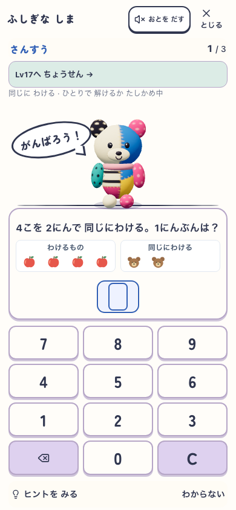
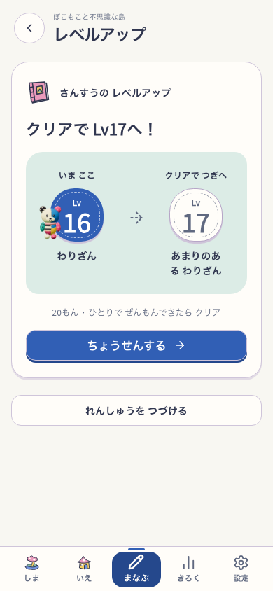
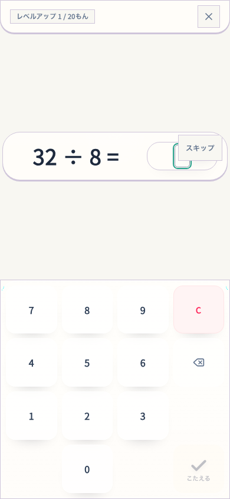
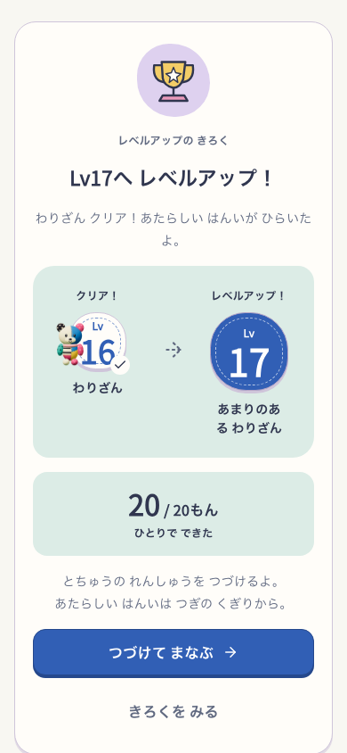
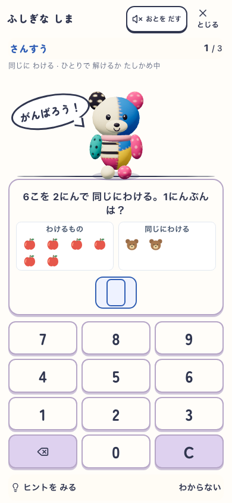
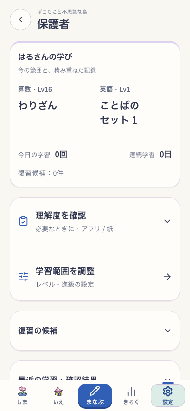
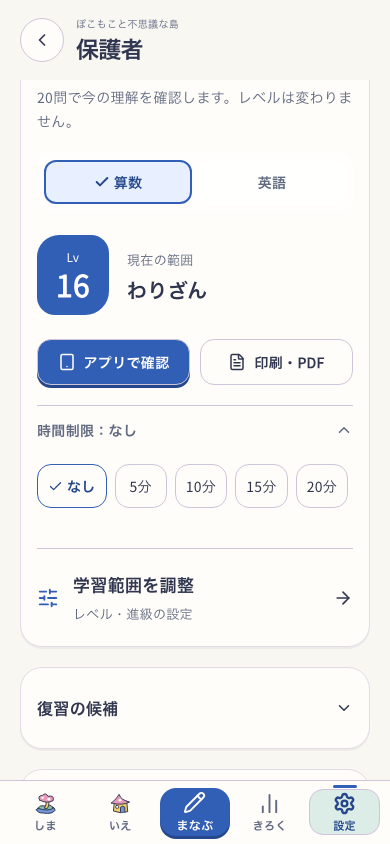
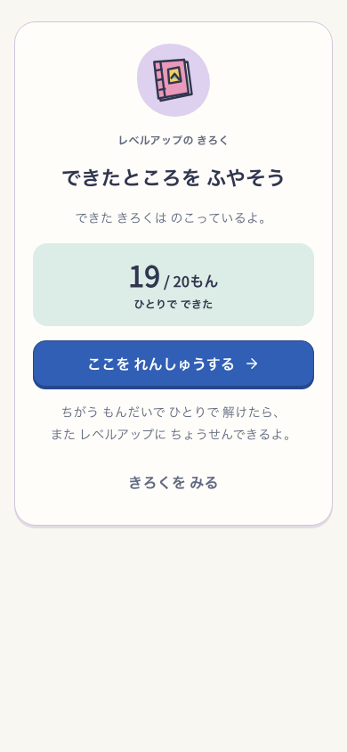
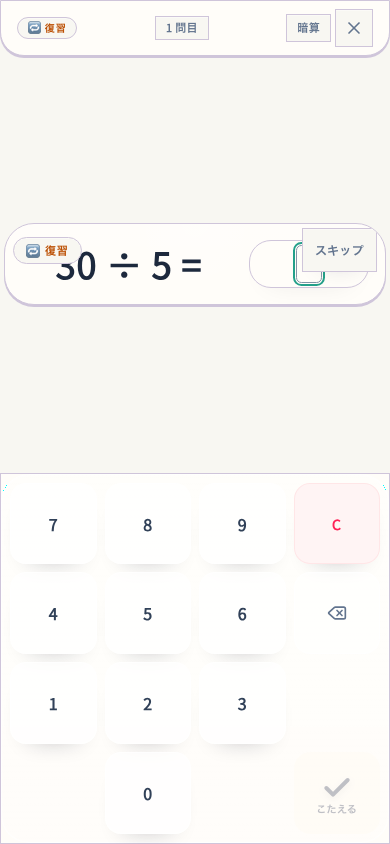

学習 → 挑戦 → 進級 / 保護者
learning-flow-20261003-r2 · Island / Growing flags ON · production preview 5291
progress-level-up-v4 / learning-flow-v5 / parent-learning-hub-v1
本人の理解・再訪意欲：利用者確認は未実施。準備は隔離した合成fixture。実入力・保存・再開を確認。
 記録：次への準備 · 390pxverified/ready-390.png
記録：次への準備 · 390pxverified/ready-390.png
練習：任意の挑戦 · 390pxrecovery-next-verified/practice-390.png
共通の挑戦確認 · 390pxrecovery-next-verified/entry-390.png
実際の20問 · 390pxrecovery-next-verified/test-390.png
保存されたLv17 · 390pxverified/clear-390.png
オフラインで同じ練習 · 390pxverified/offline-390.png
保護者：学習状況が先頭 · 390pxverified/parent-overview-390.png
保護者：任意の確認と時間 · 390pxverified/parent-timer-390.png 学習後の記録更新 · 390pxverified/parent-refreshed-390.png範囲調整から戻る · 390pxverified/parent-range-return-390.png
学習後の記録更新 · 390pxverified/parent-refreshed-390.png範囲調整から戻る · 390pxverified/parent-range-return-390.png
19/20：Lv16を維持 · 390pxrecovery-next-verified/recovery-390.png
必要な問題を復習 · 390pxrecovery-next-verified/targeted-review-390.png